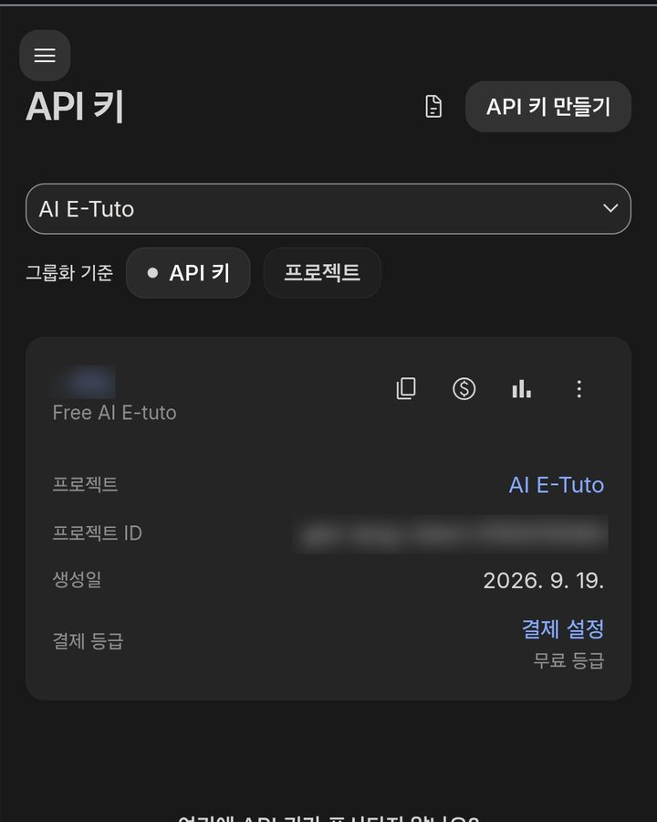
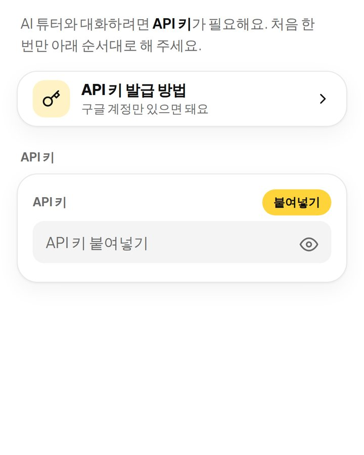

AI E-Tutor
2/4단계 · AI 연결
화면
AI 튜터와 대화하려면 API 키가 필요해요. 처음 한 번만 아래 순서대로 해 주세요.
도움말
AI Studio에서 새로 만든 키를 써야 해요. 예전 방식으로 만든 키는 막혔을 수 있어요. 결제 수단을 등록하지 않으면 무료 한도 안에서만 쓰이고, 한도를 넘으면 앱이 알려줘요. 무료 등급에서는 대화 내용이 구글 서비스 개선에 쓰일 수 있으니, 개인정보는 알려주지 않는 게 좋아요.
API 키
AI 교정 스타일
튜터가 기억하는 나
하루 한 번, 최근 대화에서 튜터가 고쳐 준 내용으로 만들어요. 틀린 항목은 ×를 눌러 지우면 다시 만들 때 빠져요. 이 메모는 대화할 때 튜터에게 함께 전달돼요.
학습 레벨
말하기
튜터 목소리
튜터 대답, 단어 발음, 오늘의 표현 등 앱의 모든 영어 읽기에 적용돼요.
학습 알림
파일을 내려받아 열고 저장하면, 정해진 시각에 폰이 알려줘요. 바꾸거나 끄려면 캘린더에서 그 일정을 지우고 다시 추가하세요.
친구에게 소개
카카오톡으로 보내도 친구 폰에서 크롬으로 바로 열려요. 옆에 있다면 QR을 폰 카메라로 찍게 해 주세요.
잘 모르겠다면 그대로 두세요. 기본값이 가장 잘 맞아요.
AI 모델
음성 인식
인식된 글자가 입력칸에 먼저 나오고, 확인하고 보내면 엉뚱한 단어가 그대로 전송되는 걸 막을 수 있어요.
버전 v3.2
© 2026 Jin Howard. All rights reserved.
무단 복제 및 배포를 금지합니다.
3/4단계 · 마이크와 소리
AI 튜터와 말로 대화하려면 아래 두 가지를 꼭 확인해야 해요.
익숙해지면 설정 → 튜터 목소리에서 언제든 바꿀 수 있어요.
허용 창이 뜨면 허용 또는 사이트 방문 중 허용을 눌러 주세요. '이번에만 허용'을 고르면 매번 물어봐요. 소리는 별도 허용이 없고, 폰 볼륨과 무음 모드만 확인하면 돼요.
카카오톡 같은 앱 안에서는 마이크와 앱 설치가 잘 안 돼요. 메뉴에서 다른 브라우저로 열기를 누르거나, 링크를 복사해 크롬에서 열어 주세요.
오늘의 추천 단어
초대받은 사람만 쓸 수 있는 앱이에요.
© 2026 Jin Howard. All rights reserved.
오늘 대화 정리
찍으면 바로 앱이 열려요

AI Studio에 처음 들어가면 키가 자동으로 1개 만들어져요. 화면이 다 뜰 때까지 기다리고, 새로 만들지 마세요.
목록에 있는 키의 복사 아이콘을 누르면 키가 복사돼요.
10초쯤 기다려도 목록이 비어 있을 때만 API 키 만들기를 눌러요. 키가 여러 개여도 하나만 쓰면 돼요.

붙여넣기를 누르면 끝이에요. 안 되면 입력칸을 길게 눌러 붙여넣어요.